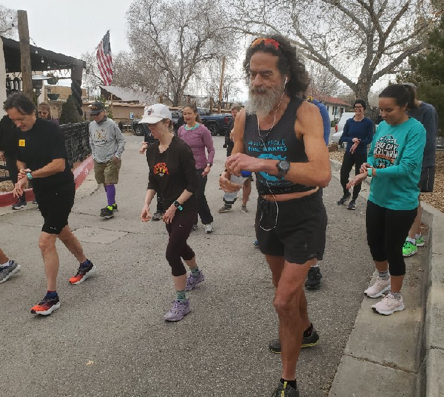

V Day
V Day Run is the fourth run of the Burque Brewery Tour.
Overcast, not particularly windy, warm for me. The course was new, but I had been to the Hops Brewery previously with Team RWB after an invigorating group bike ride.
My big concern was my foot.
Last month, I pushed my Saturday long run to Sunday, so I could race "Resolutions Stink!". For this V Day Run, I chose to do my long "run" the day before. So, the day prior I "ran" twenty-four miles with a forty-one pound pack. It did not go well, and I wound up taking my shoe and sock off a few times.
With my sock off, I noticed a speck in the center of my hot-spot that could have been the tip of a goat's head or perhaps it was simply dried blood where a goat's head had merely stabbed me. My eyes are bad enough that it could have been anything.
After finishing my long "run", I used my wife's X-Acto knife and removed what appeared to be (bad eyesight caveat) some sort of splinter. Yes, my foot bled a little. No, I didn't need stitches. It did leave my foot a little tender, but I knew that the following day I'd have the V Day race and would get a chance to test my handiwork.
I ran fine. My official time was 23:08.

Running with a shirt was an accident.
I had intended to doff my crop-top before the race, but I was too busy yacking at people.
Free Beer
I gave my free beer coupon to the Muirheads, whom I've used my scruffy appearance to scam pity beers from at both the Black Friday Turkey Trots and the Grinch Lunch earlier in the season. I kept the penguin.